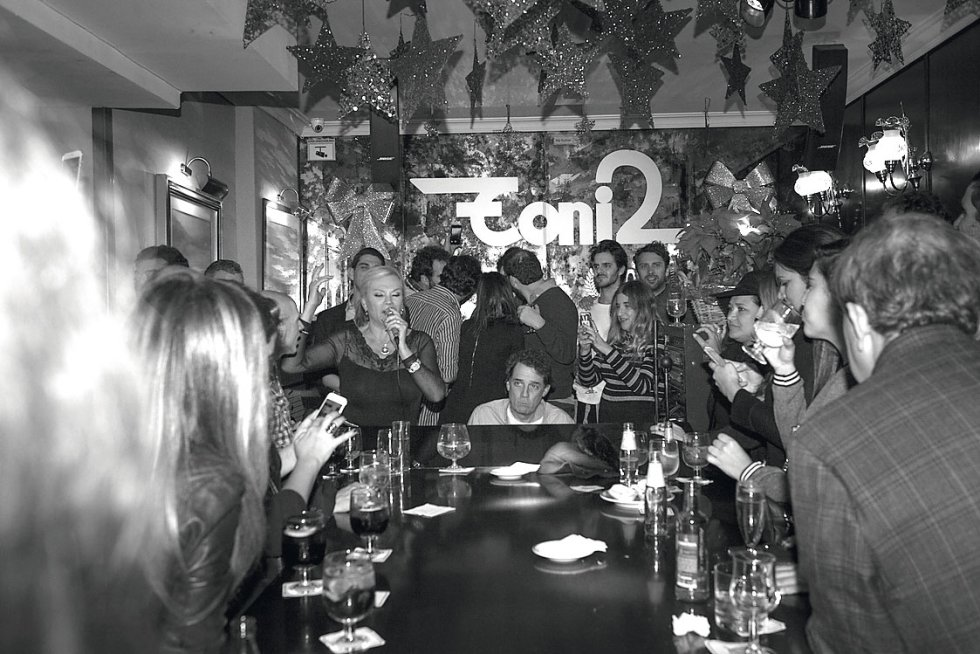

“Lo que pasa en Toni2, se queda en Toni2”. Es la filosofía de este piano bar. Desde siempre. Y es que, aunque quisiéramos explicar, para entender la magia de este lugar, hay que vivirla. Sentirla. Y, sobre todo, cantarla.
Según la RAE, un piano bar es “un establecimiento donde se sirven bebidas y se toca música de piano en directo”. Para Taburete, los “amos del piano bar”, explora la nostalgia, el anhelo y la pérdida de control, del lugar querido que no volverá. Eso es lo que causa un lugar como este. Apreciar los recuerdos, anhelar los momentos escapados y, sobre todo, celebrar. Valorar lo vivido y disfrutado, como en un piano bar.
El Toni2, es uno de los grandes templos de la noche madrileña. Para entender su fenómeno, hay que viajar hasta una noche de mayo de 1979. Ese día, Antonio Tejero, más conocido como Toni, abrió un local único con su nombre a solo siete minutos de la Gran Vía. Las madrugadas de la capital se revolucionaron de golpe alrededor de un piano de cola. El lugar, con sus gigantescas plantas kentias y su piano al fondo del negocio, comenzó a llenarse de políticos, de músicos, de periodistas, de artistas, de jóvenes, de mayores, de abuelos, de parejas, de amantes, de series y de películas. No era un local cualquiera. Aquí uno entraba y, si la noche se terciaba, se convertía en una estrella por unas horas.
La cultura underground surgió de ese estrato social que busca la novedad y lo “vanguardista” en términos musicales. Un público que escapa de lo mainstream o de la “moda” más generalista y comercial. Con este deseo tan latente entre los jóvenes, la idea de recrear los míticos “garitos” de barrio nace con la intención de unir a un público con los mismos gustos musicales. Estas son algunas de las salas “de siempre” que sonarán a la generación X y que están ganando más popularidad a través de redes sociales:
Primero fue Toni, y los años 60. En la calle Lagasca. Aquel era un local que no cerraba nunca. Su piano, sus cafés irlandeses -para muchos, los mejores de la ciudad-, y la música de aquellos cuatro de Liverpool que sonaba tan bien, hacían del local un lugar diferente.
En 1979, Camarón de la Isla saca el inigualable álbum La Leyenda del Tiempo. En ese mismo año, sale a la venta el walkman. Madrid, al mismo tiempo, se convertía en un lugar sonámbulo, nocturno. Fue entonces cuando abrió el Toni2. En la cola de ese piano de 4 metros, las noches comenzaron a ser mucho más largas de lo que era habitual. A partir de entonces, el piano bar que creara Toni Tejero, nunca ha dejado de sonar.
Más de 40 años después, la música sigue sonando como protagonista absoluta dentro del recinto de la calle Almirante 9. Se trata de un lugar donde no se programan los temas, donde manda la improvisación, donde suenan las canciones favoritas de los allí presentes. Una noche en el piano bar de Toni2 da para mucho. Da para escuchar a Raphael, o a la banda de Bono, o incluso los boleros de Ravel. El género es lo menos importante en un sitio como este. Las modas, menos todavía. Cuando comienza a sonar el piano, toca improvisar, y todos se adentran en la magia que el momento atrae consigo. La magia envuelve una noche que apunta a ser recordada, y esos pianistas que acompañan al público en cada actuación, consiguen que cada interpretación sea un éxito rotundo.
Han pasado cuatro décadas desde la apertura del Toni2. Sin embargo, da la sensación de que todo sigue igual. La larga barra estilo inglés tapizada con capitoné y maderas nobles sigue presente en el mismo lugar de toda la vida. Sobre ella, una amplísima variedad de licores, con botellas de toda clase. La tradición sigue mandando, en un lugar donde nada cambia. El primer licor llega antes de acercarnos al piano, de manera imponente. Este reina en el local y lo impregna de una atmósfera inigualable, como la moqueta que yace sobre los pies. Como ese mobiliario de épocas pasadas.
Hasta marzo de 2020, las noches del Toni2 giraron en torno a un piano negro de cola que, acompasado por la voz de los propios pianistas y de los clientes, velaban las madrugadas como si fuera un karaoke yacente en una realidad paralela al mundo real. Este éxito, de puertas para fuera, significó que el fenómeno cruzase el Atlántico y tuviese varias copias en Latinoamérica. Sin embargo, de puertas para dentro, la relación entre la familia Tejero, se fue deteriorando con el paso de los años.
Los Tejero son seis hermanos. Unos renegaban del local y otros estaban a favor de mantener el imperio nocturno que gestó su padre. El patriarca de la familia falleció en julio de 2006, a los 73 años. Dos años antes de su muerte, el padre les explicó su visión del futuro del negocio y comenzó a delegar el control del local a sus hijos. Para las directrices de la noche apostó por su primogénito. Para la gestión burocrática, se encargarían sus hermanas. Y así fue, hasta la pandemia.
En marzo de 2020, el coronavirus acabó con todo el ocio nocturno. Las disputas familiares de los Tejero brotaron de nuevo. A las reseñables disputas arrastradas entre los hermanos, se sumó una reunión entre todos que alumbró un cambio de rumbo del local. Tres de los cinco hermanos querían que el Toni2 fuera aún más rentable. A esta visión se sumó la madre. César, por su parte, se negaba a modernizar el local. “Lo que pasa en el Toni2 se tiene que quedar en el Toni2. Lo de meter el local en las redes sociales va a desplazarnos de la esencia del negocio, de los clientes fieles. Vendrán más jóvenes, y los mayores se perderán. Cambiará todo. Los valores humanos que me inculcó mi padre se perderán”, apuntaba en una entrevista al periódico El País.
Por si fuera poco, al Toni2 le ha salido un duro competidor: Hijos de Tomás, un nuevo piano bar con la garantía de la familia La Ancha detrás, capitaneada por los hermanos Redruello. Eva Páez es una de las artistas que plantará batalla a Patrick y Jesús Serrano, los clásicos pianistas del templo de la noche madrileña, donde ya es casi imposible entrar a causa de sus largas colas.
Hijos de Tomás está inspirado en los bares de los años 40 y 50 que aterrizaron en la Gran Vía tras la estela de los speak easy norteamericanos. Sofás rojos, artesonados de manera, mesas de mármol decoradas con velas y, por supuesto, un gran piano de cola, el protagonista absoluto del local. Como sucede en el Toni2, cualquiera puede subirse al escenario a interpretar sus versiones. Pero si hay algo que diferencia a Hijos de Tomás, es su cuidada coctelería, que alterna las bebidas clásicas con combinados de autor, inspirados en personajes emblemáticos. Se puede degustar desde un South Face -la bebida favorita de Al Capone-, hasta un Compay.
La realidad es que pasaron los años y lo seguirán haciendo, y Toni2 va a seguir siendo el referente de la noche madrileña en el ámbito de los pianos bar. Aunque Hijos de Tomás está emergiendo con la suficiente fuerza como para, en un medio o largo plazo, desbancar a Toni2, el emblema que representa este último seguirá latiendo con mucha fuerza. Porque este lugar es mucho más que un piano bar, o que cualquier cafetería o discoteca. Es la casa de los que llevan media vida yendo, o de los que lo han descubierto hace poco. Las historias mantienen su llama encendida pese al paso del tiempo, y pese a los conflictos internos que pueda sufrir. Porque “lo que pasa en Toni2, se queda en Toni2”.